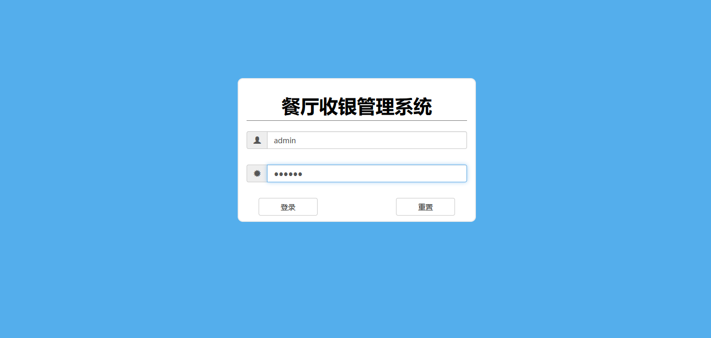
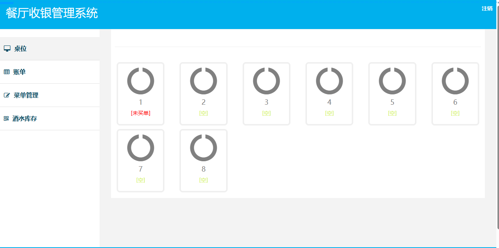
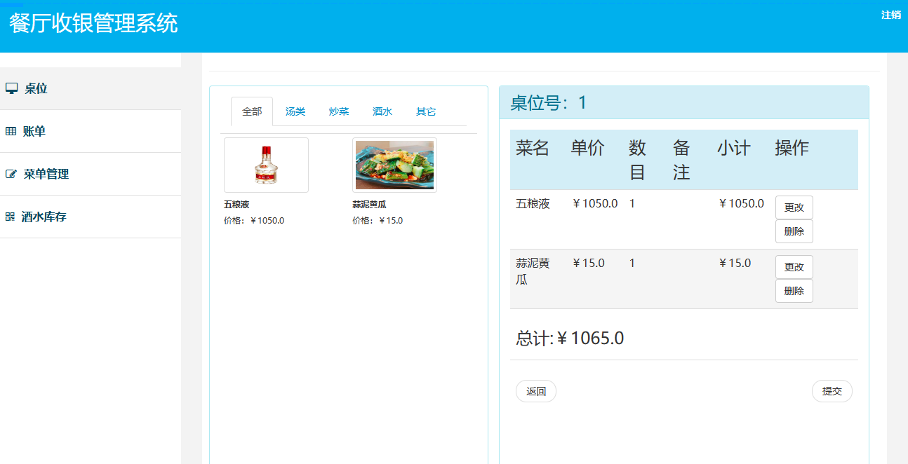
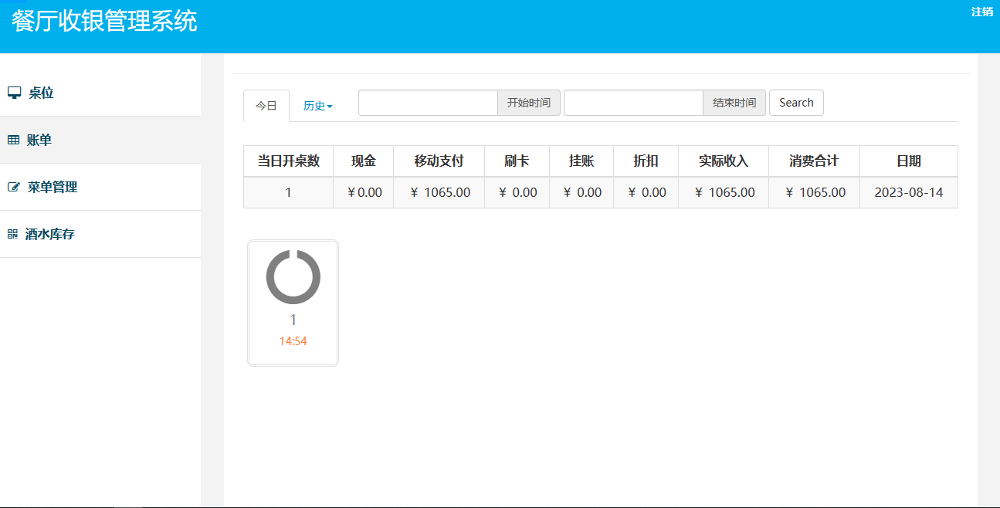
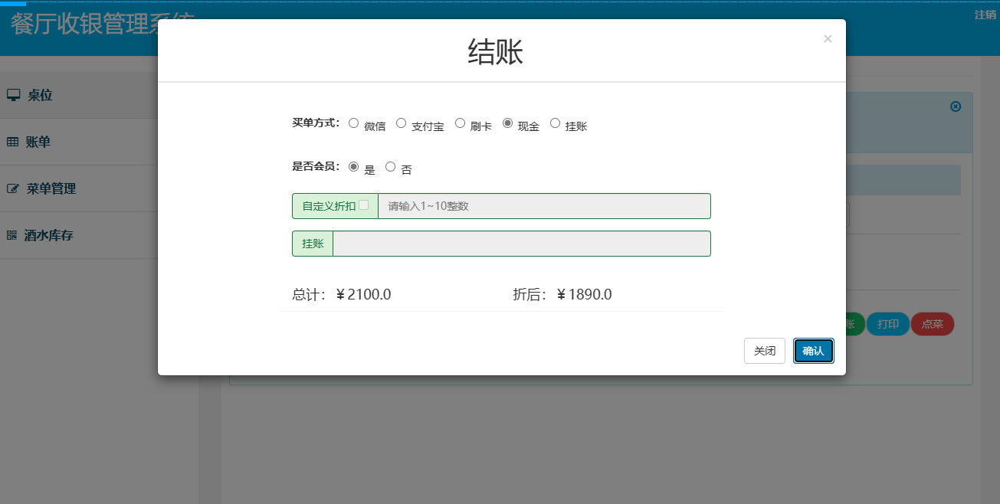

SSM 餐厅收银管理系统
一、项目介绍
213
餐厅收银管理系统基于 Spring+SpringMVC+Mybatis 开发，主要功能为餐厅点餐、收银等功能。
具体功能如下：
-
桌位一览
-
桌位维护
-
菜品管理
-
账号管理
-
供应商管理
-
开桌
-
点餐
-
结账
-
账单管理
-
酒水库存
二、技术框架
-
后端：Spring，Springmvc，Mybatis
-
前端：bootstrap，jquery
三、安装教程
-
用 idea 打开项目
-
在 idea 中配置 jdk 环境
-
配置 maven 环境并下载依赖
-
配置 Tomcat8.0
-
新建数据库，导入数据库文件
-
datebase.properties 文件中将数据库账号密码改成自己本地的
-
打开 redis 服务，在 redis.properties 中配置自己本地的 redis 信息
-
启动运行，访问
http://localhost:8080
, 账号密码 admin/123456
四、项目截图




